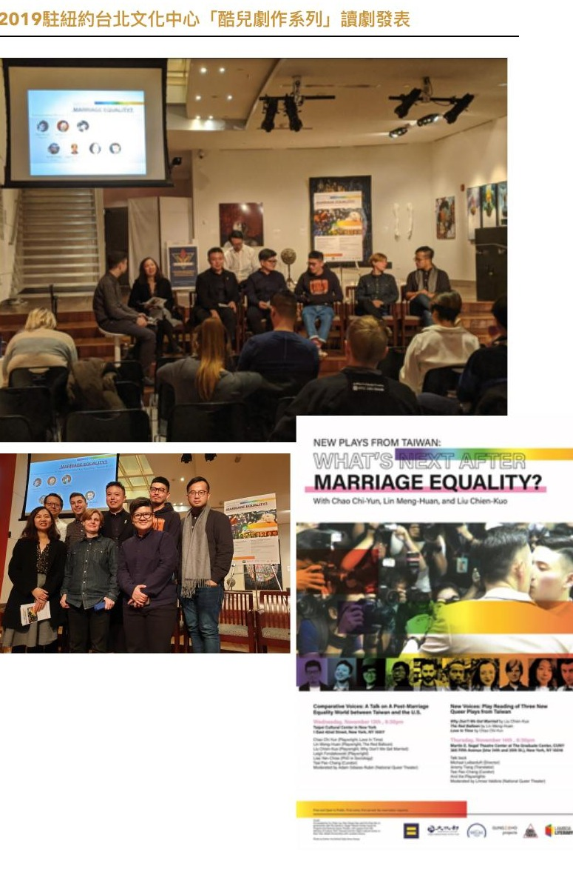

WORK · 2019
《我們結婚，好嗎？》
編劇

同婚元年的跨文化劇作交流
結合歌仔戲與舞臺劇形式，在紐約 CUNY Segal Theater 發表並與劇場界交流。
酷兒劇作系列｜紐約讀劇
臺灣邁入同婚元年，劇作家劉建幗、林孟寰與趙啟運以「同婚前後」為命題，分別融合歌仔戲、科幻與冥婚元素創作劇本，於紐約發表並與劇場界人士交流。
劉建幗的作品結合歌仔戲與舞臺劇形式，於 CUNY Segal Theater 參與讀劇演出；除編劇外，亦擔任劇中歌仔戲之安歌及演唱。主辦單位為駐紐約臺北文化中心。